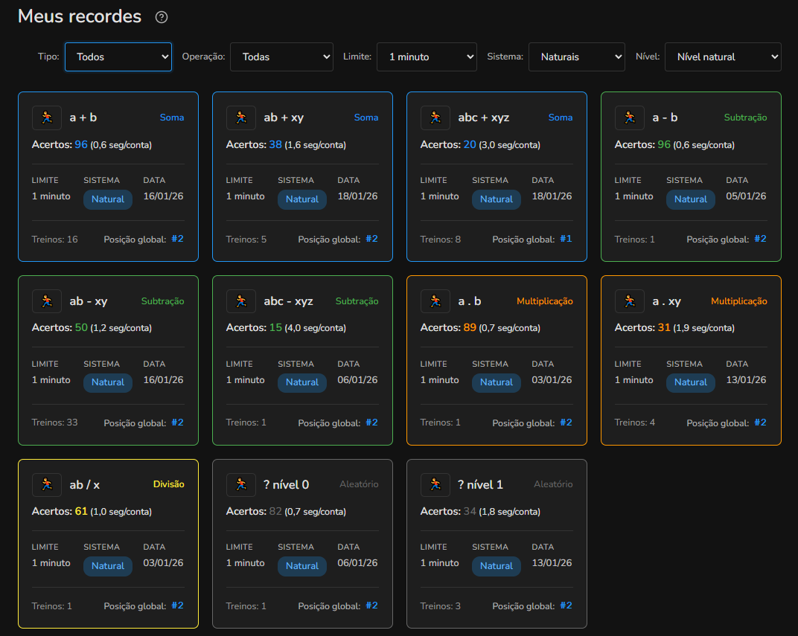
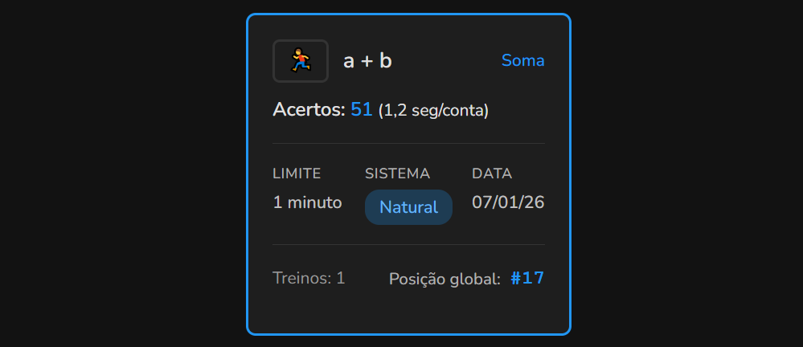
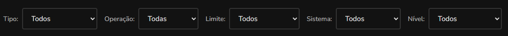

Sobre os recordes no Numix
Visão geral
Na página de recordes aparecem todos os treinos que você já fez pelo menos uma vez no Numix. Cada cartão mostra sua melhor pontuação para aquela configuração específica de treino (operação + limite + sistema).

Informações nos cartões
Cada cartão de recorde exibe informações importantes sobre seu desempenho:
- Nome da operação e tipo (soma, subtração, etc.);
- Maior pontuação alcançada e tempo médio por conta;
- Limite de tempo;
- Sistema numérico;
- Data do recorde;
- Total de treinos realizados;
- Posição no ranking global.

Ações rápidas nos cartões
Iniciar treino com as mesmas configurações
No canto superior esquerdo de cada cartão há um ícone de treino. Clicando nele, você inicia imediatamente um novo treino com as mesmas configurações daquele recorde (mesma operação, limite e sistema).
Ver ranking global
A posição no ranking global é clicável. Ao clicar nela, você será redirecionado para a página de rankings filtrada para aquela configuração específica de treino, permitindo comparar seu desempenho com outros usuários.
Filtros de recordes
Na parte superior da página você encontra diversos filtros para encontrar recordes específicos:
- Tipo: mostra apenas um tipo de operação (soma, subtração, etc.);
- Operação: filtra pelo nome da operação;
- Limite e sistema: filtram por limite de tempo e sistema numérico;
- Nível: filtra as operações que foram acrescentadas naquele nível.

Limite de exibição
A página mostra no máximo 40 recordes por vez. Se você tiver mais de 40 recordes, aparecerá uma indicação mostrando quantos estão sendo exibidos do total.
Ver recordes de outros usuários
Você pode ver os recordes de outro usuário no Numix ao clicar no nome dele em qualquer ranking.